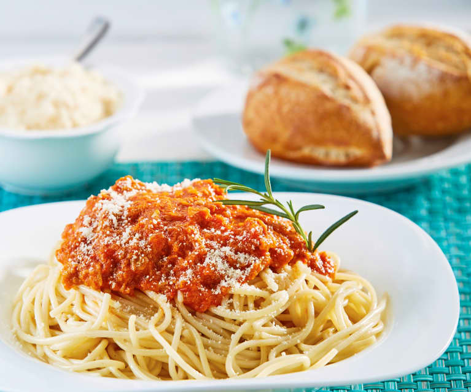

Pasta Clasica de Tomate
Una pasta con salsa de tomate, facil de hacer, rapida, y de gran sabor
"Esta es una pasta que se puede aprender a hacer en 20 minutos, es sencilla, pero te salva de sitauciones con hambre, o si ocupas impresionar a tu cita"
Ingredientes
- Aceite de oliva
- Pasta al gusto
- Tu salsa de tomate favorita
- Agua
- Ajo
- Sal
- Parmegianno Regianno
Instrucciones
- Primero se pone a calentar el agua agregandole mucha sal, ajo, y una pizca de aceite.
- Cuando el agua empieze a hervir, mete en el agua la pasta de tu preferencia.
- Una vez la pasta agarre un color blanquesino, con una cuchara, cuidadosamente aguarrar un pedaso de pasta y probar.
- Si la pasta esta suave, quitala de la lumbre, colala en tu fregadero mas cercano, y colala; si no esta suave, dejala mas tiempo hasta que este suave.
- Al mismo tiempo empezar a calentar tu salsa de tomate favorita a fuego medio por 3 minutos.
- Una vez colada la pasta, colocar en un plato, y colocar la salsa encima de este.
- Una vez este todo esto colocado, agregar encima de la pasta Parmegianno Regianno al gusto.
- Tu pasta esta lista, y solo te toca disfrutar.
